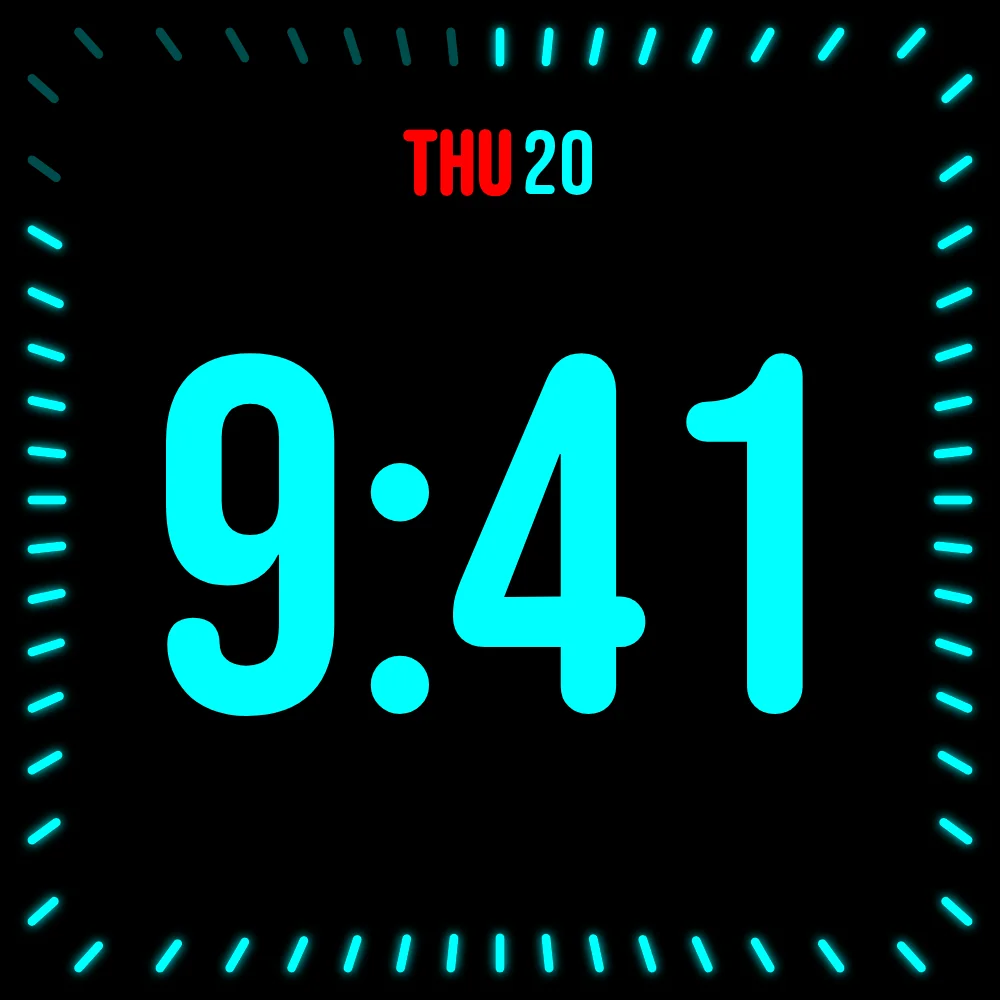

StandBy 待机屏踩坑记：那些看似简单却会让你一头雾水的细节
装 StandBy 以为就是个充电屏亮钟的简单事，用久了才发现退出规则、竖屏触发、第三方组件、老系统特效全是容易踩的坑。这篇把我踩过的四个典型坑和绕开它们的法子整理出来。
当初从官方下载装了 StandBy，是冲着"插电自动亮屏当钟用"的简洁描述，觉得无非是StandBy官网主打那个把待机界面做得好看点的小工具。用了三个月，钟面是换了七八套，但踩的坑也攒了一串——全是那种"以为是 bug 其实是设计"的事，每次都得翻 StandBy文档 才搞明白。挑四个出镜率最高的说，基本覆盖了日常使用里八成的困惑。
坑一：竖屏充电，怎么不自动亮？
症状：横放手机充电一切正常，换立式无线充竖屏放着，插上电屏幕纹丝不动。手动点开应用倒是能进待机界面，但自动触发就没反应。我第一次遇到时以为快捷启动的开关没开，把设置里翻了三遍确认勾着，差点卸了重装。
原因：自动触发只认横屏。官方的设计逻辑是——竖放等于在口袋或背包里，自动亮屏会误触发耗电；横放才是"我想把它当个钟"的信号。这个取舍写在退出规则里，但安装时没特别提示，新用户很容易以为横竖都应该触发。
解法：竖屏场景想用上，手动点开应用即可，界面会按竖屏重排，该有的钟面和组件一个不少。或者换一个横放的充电底座——很多用户最后干脆配了个床头横充架，也算间接解决。
坑二：拔了充电器，屏幕还亮着
症状：早上拔线准备出门，手机屏幕继续亮着待机界面，不自动熄灭。按电源键也关不掉，得强制点双击关闭或者进应用退出去。我以为是充电检测坏了，重插拔了几次才消。
原因：双击关闭会覆盖拔电退出的优先级。你手动双击关掉过一次之后，应用会记住"用户主动退出"这个状态，后续即使拔掉充电器也不会自动返回系统待机。这个逻辑在退出规则里提了一嘴，但没有明显的状态指示——你看不出自己是不是在"手动退出模式"下。
解法：最简单的办法是再插回充电器等它自动亮屏，然后正常拔线，状态就恢复了。如果嫌麻烦，可以在设置里找一下"退出后保持状态"之类的开关关掉——我的版本里这个选项藏在高级设置最底下，叫 Persist Exit State，默认开启。
坑三：第三方小组件加了不显示，显示异常
症状：长按屏幕进编辑，选了个天气应用的组件加进槽位，回到屏上要么是空白方块，要么只有半截、要么尺寸完全不对。我先后试了三个不同的天气应用，两个显示异常，最后换了个日历应用才正常。
原因：不是 StandBy 的锅。Android 的锁屏通道对小组件有系统级限制——某些应用的小组件只在桌面通道完整渲染，锁屏通道上会被截断或降级。天气类应用因为要实时刷新，受影响的概率特别高。另外免费版只有 1 个第三方槽位，Premium 最多 6 个，槽位用完了再加也会静默失败，容易误以为是组件本身的问题。
解法：换同类应用。社区里有专门整理的"锁屏兼容组件清单"，大体规律是——原生系统应用的组件优先，第三方里日历、待办类的兼容性最好，天气和音乐类最容易翻车。如果是 Premium 用户，六个槽位合理分配，不要一口气全塞给同一类应用。
坑四：钟面特效比别人少一截
症状：看人帖子里霓虹数字钟有呼吸灯效果、模拟钟有秒针动画，自己换上同款样式却光秃秃的，只有静态画面。字体选项也比别人少几个，矩阵主题的字符雨完全不刷。我对照了版本号是最新的，一度怀疑自己下了盗版。
原因：特效需要 Android 12 及以上。文档里提了一句"部分动画老系统会被隐藏"，但没列具体哪些。实际情况是——Android 11 以下大部分动画直接不渲染，Android 12~13 之间有部分特效降级，到 14 才算完整。霓虹钟的呼吸灯、矩阵的字符雨、模拟钟的秒针动画，全在这个被降级的清单里。
解法：确认系统版本。进设置里找"特效兼容模式"的开关，有的版本里可以强制开启（代价是耗电略增），有的版本硬开不起来。老系统上退而求其次，选那些静态效果本身就好看的样式——LED 分段钟和极简两针模拟钟在任何版本上都完整显示，不亏。

还有几个小坑没单独展开，提一嘴：Duo 分屏的格子比例在某些平板上会跳来跳去，重启应用就好；模拟钟换角标之后偶尔会残留旧角标，长按重选能清掉；免费版的第三方槽位用完再加没反应，别像我那样反复卸载重装以为是 bug。
知道这些坑之后，这软件其实相当省心。把防坑清单贴在下面，每次设置新设备时过一遍就行。
防坑速查清单
- 自动触发认横不认竖：想竖屏用就手动点开，别在设置里翻半天找开关；
- 双击关闭会覆盖拔电退出：拔线不灭屏时先插回去再拔，或者关掉 Persist Exit State；
- 第三方组件兼容性先查：原生应用和日历/待办类优先，天气音乐类踩坑概率高；
- 特效看系统版本：Android 12 以下别指望呼吸灯和字符雨，选静态也好看的样式；
- 免费版只有 1 个槽位：加第三个组件没反应不是 bug，是额度到顶了。
这套资料在 GitHub、Gitee、GitCode 三个仓库都能拿到，文档更新同步、版本号保持一致，国内访问选 Gitee 或 GitCode 就行，GitHub 偶尔会慢半拍。